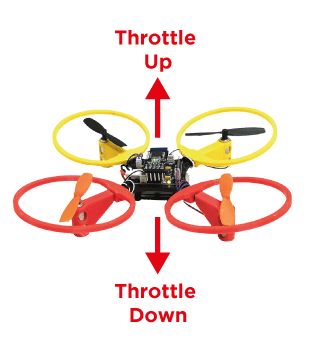
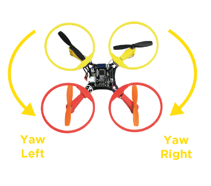
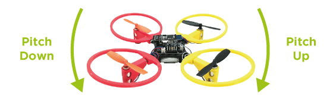
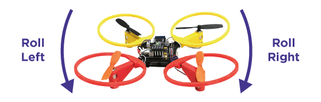
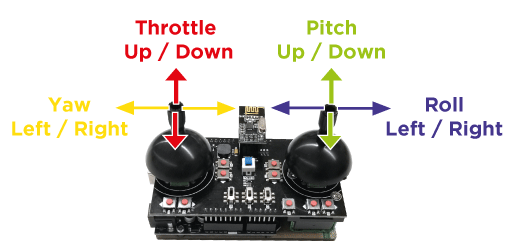
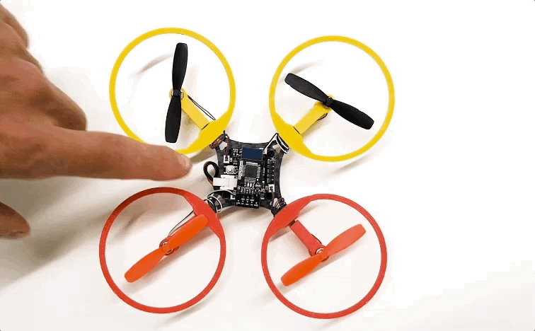
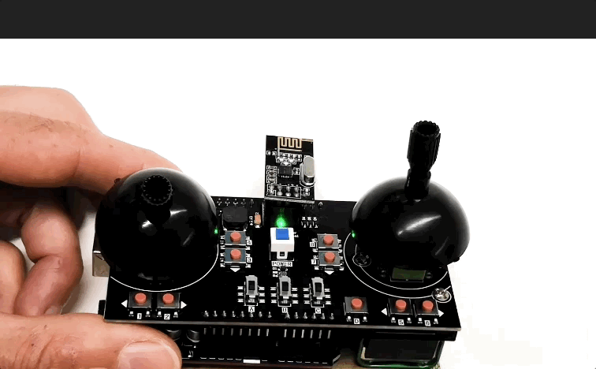
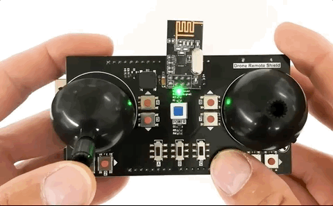

Tips for flight
access_time 1 hour
1. Safety first!
Always operate your drone in a clear and flat area, 3 to 4 square meters should be sufficient for your first flight. Never touch the drone when the propellers are spinning. Never fly over a crowded area or a road. Always keep your drone in sight and fly it only at day, don’t fly over private properties. Remember that you are responsible of your drone and any damage you may cause using it.
2. Know your drone
Where is the front? There is 3 ways to determine the orientation of your drone : small arrow on the controller board, color of the bumpers, and the 3 LEDs on the bottom of pcb (1 blue on the front and 2 greens on the back).
3. Throttle, Yaw, Pitch an Roll
These are the main movements you can use to navigate in the air.
Throttle : vertical up and down.

Yaw : left and right rotation.

Pitch : forward and backward tilt.

Roll : side to side tilt.

4. Remote
Left joystick is for throttle (up and down) and yaw (left and right), right joystick is for pitch (up and down) and roll (left and right). The buttons 1 to 8 are used to adjust the center position of corresponding direction of joystick, if needed you can use the D button to reset the centers of joysticks to their default position. Switch A is for arming the motors, B, C switches are additionals channels and will not be used here.
Remote joysticks.

5. Ready to start
Put the throttle jog down (left joystick) and power on the remote.
Starting the remote.

Plug the battery on the drone and place it on the ground in a flat and clear area with the back towards you and press the power button. The "signal" LEDs should flash simultaneously on both drone and remote.
Starting the drone.

Pull the A swtich on the remote to arm the motors.
Arming motors.

The Green LEDs on the bottom of the drone should starts flashing, If the LEDs doesn't lit toggle the A switch on the remote another time.
Drone ready.

6. First flight
Try to stabilize your drone at 50cm from the ground : gently pull the left joystick up until propellers starts to spin and the drone slowly takes off. Observe the drone behavior and try to stabilize it using the right joystick.
Throttle up gently.

Be careful not to go too high or too fast and prepare yourself to land before the drone hits something or someone.
First jump.

7. Practice
Flying drones is not easy, you will have to practice : begin by small flights to get used to the behavior of the drone and try the different movements - throttle, Yaw, Pitch and roll - individually. Progressively increase fly duration by trying to move the drone around you in a restrained area.